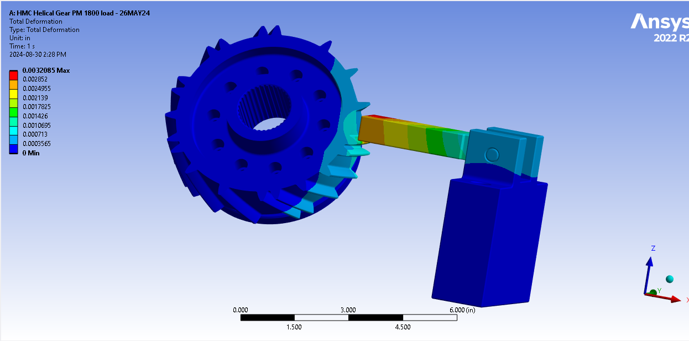
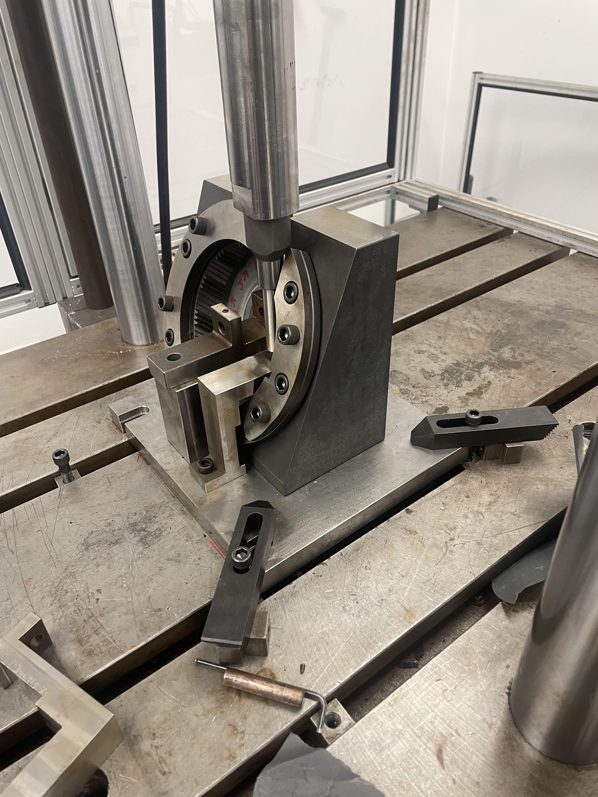
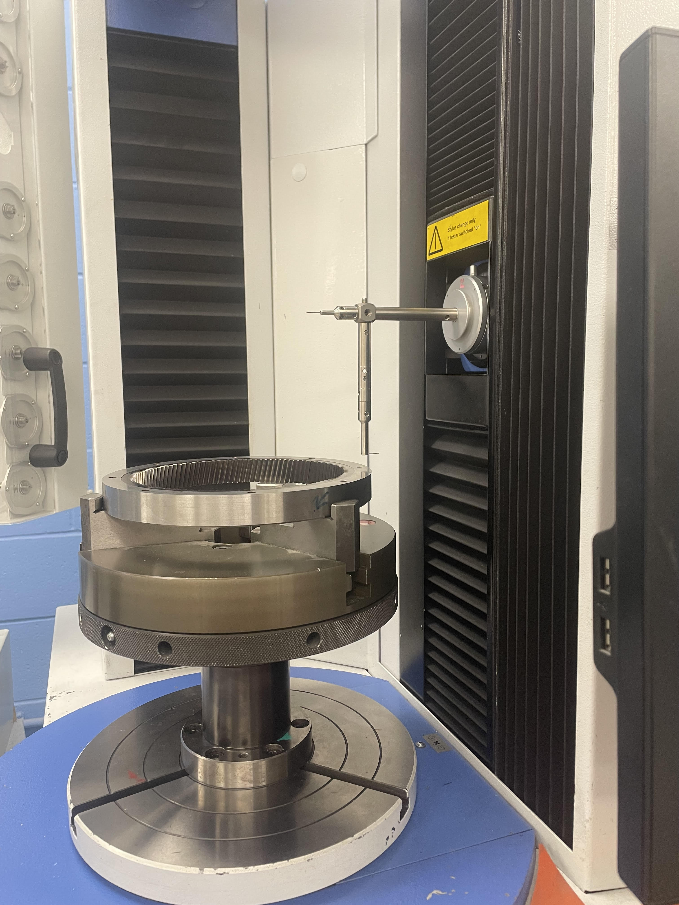
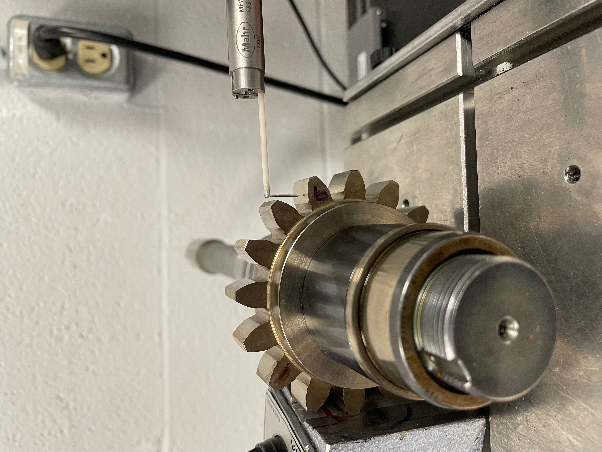
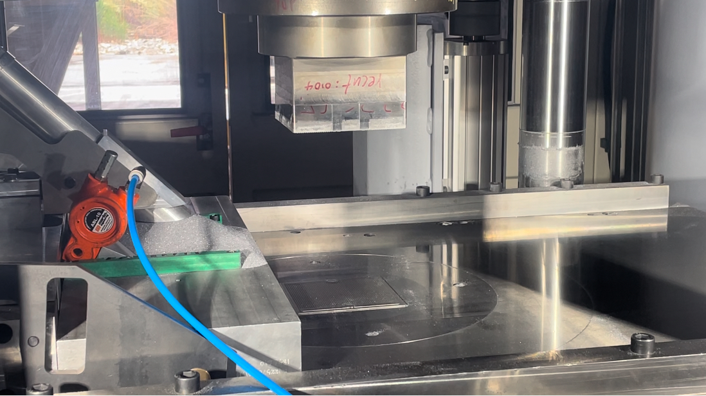
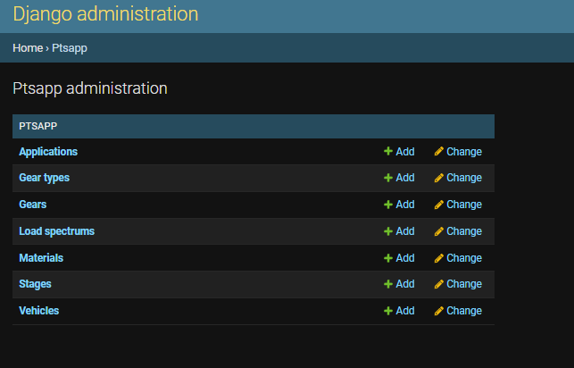

Gear engineering
Feasibility studies, reverse engineering and test-data tooling from my co-op on automotive gear programs.

Feasibility Studies
In my role, I coordinated cross-functional teams to meet project requirements from RFQ to production. Starting with performance analyses in KISSsoft, I ensured prototypes passed FEA simulations before proceeding to lab testing. I designed custom fixtures for mechanical testing, ensuring predictable failure conditions, and managed sourcing for heat treatment or additional processes when required. This approach ensured streamlined workflows and reliable outcomes.


Reverse Engineering
Reverse engineered an outsourced process involving extensive dimensional analysis of a tooling die used for surface densification on gears. The rolling die profile was reverse-engineered into a detailed drawing with official specifications. Simulations were conducted in ANSYS, and after prototyping, CpK metrics were used to validate the manufacturing process, reducing size discrepancies by 40%.


Data Analysis
Processed data from 50+ mechanical tests stored in MySQL using Python, JMP, and SQL for on-the-go visualizations and analysis. Created matplotlib visualizations for deeper insights and developed a Django web application to pipeline data for real-time filtering, analysis, and visualization. Delivered an intuitive platform for streamlined decision-making.
